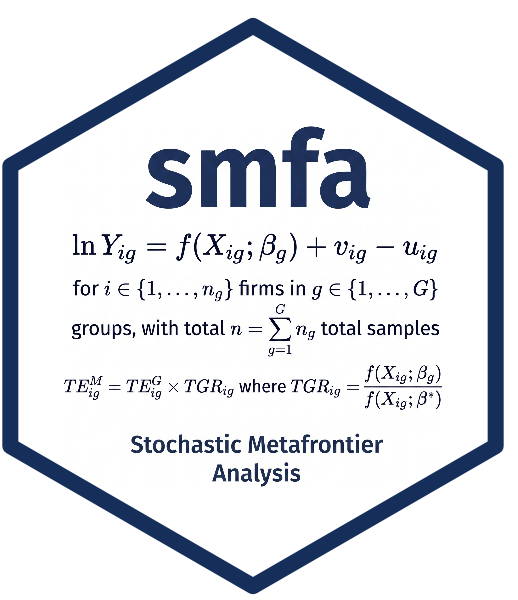
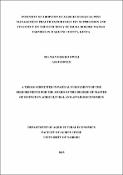
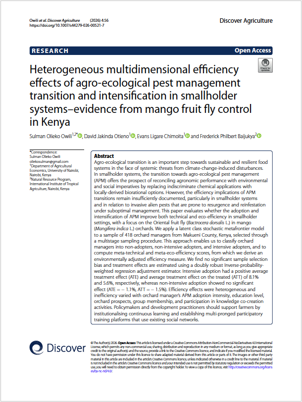
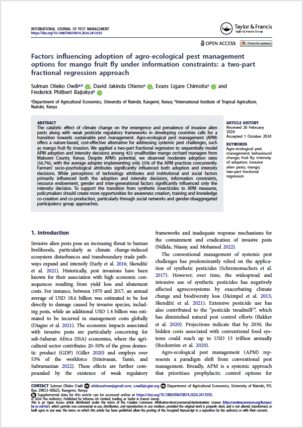
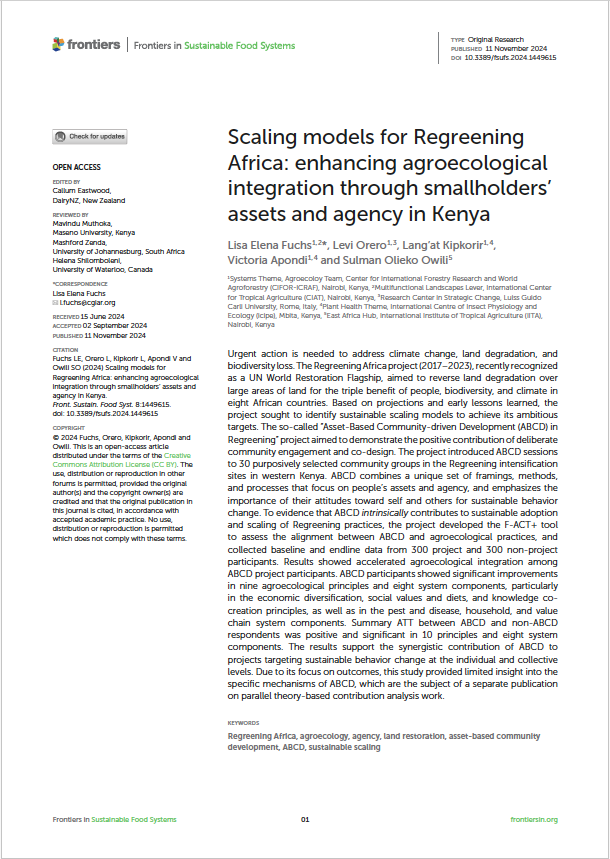
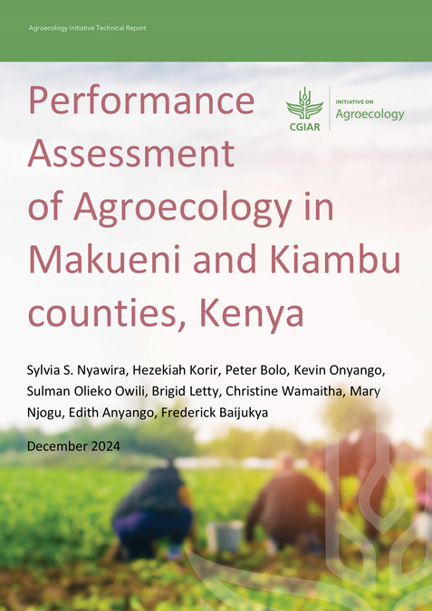
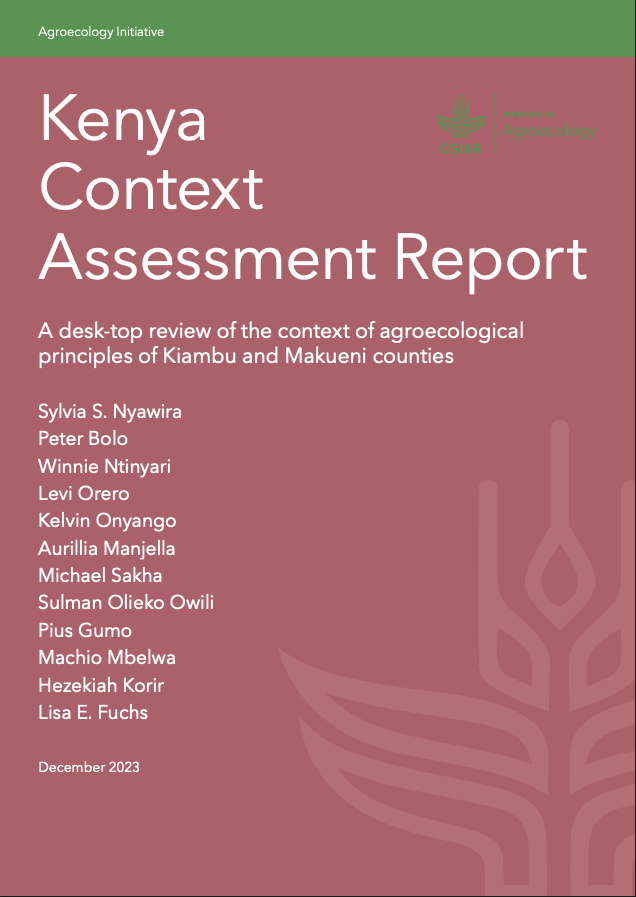
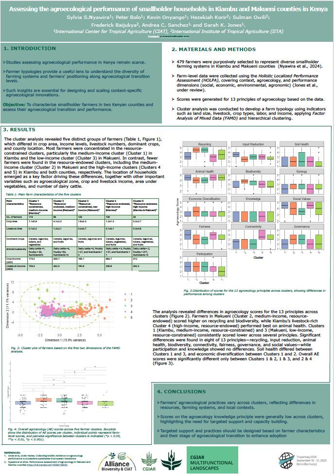
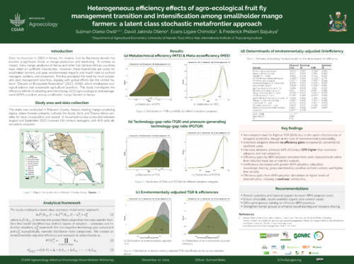

Sulman Olieko Owili
MSc in Agricultural and Applied Economics
Awards
-
Best Overall Student [2nd Link ]
[Part I: Coursework] (2023)
Shared Facility of Specialisations and Electives (SFSE) of the Collaborative Masters in Agricultural and Applied Economics (CMAAE). [Region: Eastern and Southern Africa]. -
Second-best Master's Student
[Part I: Coursework] (2023)
Faculty of Agriculture, University of Nairobi -
Third-best Master's Student
[Part II: Thesis] (2026)
Faculty of Agriculture, University of Nairobi
Contact Me
For inquiries, please email me at:
oliekosulman[at]gmail.com
Biography
Sulman is an agricultural and applied economist with over 4 years of applying innovative research and quantitative methods to inform sustainable food systems policies and advance sustainable development in the agri-food sector. In 2023, he was recognised as the Best Collaborative Masters in Agricultural and Applied Economics (CMAAE) student across eight leading universities in Eastern and Southern Africa. Ranked second- and third-best master’s student in the Faculty of Agriculture at the University of Nairobi in 2023 and 2026, respectively. Sulman has vast experience across international organisations including International Institute of Tropical Agriculture (IITA), World Agroforestry (CIFOR-ICRAF), American Heart Association (AHA), and Alliance of Bioversity International and CIAT. Research expertise spans market analysis, consumer behaviour, risk and efficiency analysis, productivity analysis, livelihoods and resilience, technology adoption, causal inference, micro-econometrics, quantitative modelling of food systems, and policy analysis. He is an active peer reviewer for leading agricultural economics and sustainability journals and an active developer of statistical software in R. Committed to food sovereignty, climate change mitigation, poverty alleviation, and empowerment of marginalised communities.
Recent Publications
Owili, SO. (2026). fracreg: Fractional Response Regressions. R package version 1.0.1. CRAN (Comprehensive R Archive Network). DOI:10.32614/CRAN.package.fracreg
Owili, SO. (2026). smfa: Stochastic Metafrontier Analysis. R package version 1.0.1. CRAN (Comprehensive R Archive Network). DOI:10.32614/CRAN.package.smfa

Owili, SO. (2026). Intensity of Adoption of Agro-ecological Pest Management Practices for Fruit Fly Suppression and Its Effect on the Efficiency of Smallholder Mango Farmers in Makueni County, Kenya. Masters Thesis. University of Nairobi. https://erepository.uonbi.ac.ke/items/a424e685-d620-4550-93b0-8d98f337b114

Owili, SO, Otieno, DJ, Chimoita, EL; Baijukya, FP. (2026). Heterogeneous multidimensional efficiency effects of agro-ecological pest management transition and intensification in smallholder systems–evidence from mango fruit fly control in Kenya. Discov Agric 4, 56. DOI:10.1007/s44279-026-00521-7

Owili, SO; Otieno, DJ; Chimoita, EL; Baijukya, FP. (2024). Factors influencing adoption of agro-ecological pest management options for mango fruit fly under information constraints: A two-part fractional regression approach. International Journal of Pest Management. DOI:10.1080/09670874.2024.2413592

Fuchs, LE; Orero, L; Kipkorir, L; Apondi, V; Owili, SO. (2024). Scaling Models for Regreening Africa: Enhancing Agroecological Integration through Smallholders' Assets and Agency in Kenya. Frontiers in Sustainable Food Systems. DOI:10.3389/fsufs.2024.1449615

Nyawira, SS; Korir, H; Bolo, PO; Omondi, K; Owili, SO; Letty, B; Wamaitha, C; Njogu, M; Anyango, E; Baijukya, FP. (2024). Performance assessment of agroecology in Makueni and Kiambu counties, Kenya. CGSpace. https://hdl.handle.net/10568/169052

Nyawira, SS; Bolo, PO; Ntinyari, W; Orero, L; Onyango, K; Manjella, A; Sakha, M; Owili, SO; Gumo, P; Mbelwa, M; Korir, H; Fuchs, LE. (2023). Kenya Context Assessment Report: A desk-top review of the context of agroecological principles of Kiambu and Makueni counties. CGSpace. DOI:10.13140/RG.2.2.36127.53928

Nyawira, SS; Bolo, PO; Onyango, K; Korir, H; Owili, SO; Baijukya, FP; Sanchez, AC; and Jones, SK. (2025). Assessing the agroecological performance of smallholder households in Kiambu and Makueni counties in Kenya. Tropentag. Bonn, Germany. https://www.tropentag.de/2025/abstracts/posters/725.pdf

Owili, SO; Otieno, DJ; Chimoita, EL; Baijukya, FP. (2024). Heterogeneous efficiency effects of agro-ecological fruit fly management transition and intensification among smallholder mango farmers: A latent class stochastic metafrontier approach. Agroecology Workshop, World Agroforestry (CIFOR-ICRAF). Nairobi, Kenya. https://hdl.handle.net/10568/170186

Working Papers
Fuchs, LE; Orero, L; van Dien, LC; Apondi, V; Kipkorir, L; Kamau, A; Muia, D; Michuki, G; Njiru, R; and Owili, SO. (2026). Heterogeneous pathways of an asset-based, agency-focused approach to sustainable land and livelihoods restoration in Kenya. Working paper.
Fuchs, LE; Orero, L; van Dien, LC; Apondi, V; Kipkorir, L; and Owili, SO. (2026). Farmer-led tools and dashboards as catalysts for improved gender relations, livelihoods and sustainable use of forest, tree and agroforestry systems: perspectives from smallholders in Western Kenya. Working paper.
Peer Review
Jul. 2026 – present- Scientific Data (Nature) — IF: 9.3
- Scientific Reports (Nature) — IF: 4.9
- SN Social Sciences (Springer Nature)
- SN Business & Economics (Springer Nature)
- BMC Agriculture (Springer Nature)
- Discover Sustainability (Springer Nature) — IF: 5.2
- Journal of Agriculture and Food Chemistry (ACS) — IF: 6.7